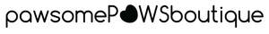
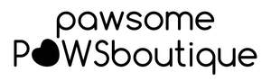

Trade Mark Journal No.2026/008 20 February 2026
UK00004335132 4 February 2026 (18,25,35)
Mark 1

Mark 2

- Class 18
- Harness for animals; Harness; Animal harnesses; Pet clothing; Harnesses for animals; Dog leashes; Collars for pets; Harnesses; Raincoats for pet dogs; Animal leashes; Dog collars; Pet leads; Cat collars; Pet hair bows; Dog clothing; Clothing for pets; Pets (Clothing for -); Dog waste bag dispensers adapted for use with leashes; Dog apparel; Leashes for animals; Animal leads; Clothing for animals; Animal apparel; Clothing for dogs.
- Class 25
- Clothing; Jackets [clothing]; Knitwear [clothing]; Ready-to-wear clothing; Garments for protecting clothing; Headbands [clothing]; Gloves [clothing]; Gloves as clothing; Clothes; Kerchiefs [clothing]; Jerseys [clothing]; Shorts [clothing]; Parts of clothing, footwear and headgear; Knitted clothing; Windproof clothing; Embroidered clothing; Rainproof clothing; Waterproof clothing; Visors [clothing]; Casual clothing; Jackets being sports clothing; Bottoms [clothing]; Ready-made clothing; Clothing for leisure wear; Leisure clothing; Clothing for sports; Sports clothing; Athletic clothing; Tops [clothing]; Weatherproof clothing; Water-resistant clothing; Beach clothing.
- Class 35
- Marketing services; Advertising services; Retail services connected with the sale of clothing and clothing accessories; Mail order retail services connected with clothing accessories; Wholesale services in relation to bedding for animals; Retail services in relation to bedding for animals; Retail services in relation to clothing accessories; Retail services in relation to fashion accessories; Online retail services relating to clothing; Advertising services relating to the sale of goods; Wholesale services relating to clothing; Retail services relating to clothing; Online retail store services relating to clothing; Wholesale services in relation to animal grooming preparations; Promoting the sale of fashion goods through promotional articles in magazines; Wholesale services in relation to clothing; Retail services in relation to pet products; Retail services in relation to animal grooming preparations; Online retail store services in relation to clothing; Wholesale services in relation to beauty implements for animals; Retail services in relation to beauty implements for animals; Retail services in relation to clothing; Mail order retail services for clothing accessories; Advertising services relating to clothing.
Pawsome Paws Boutique Ltd